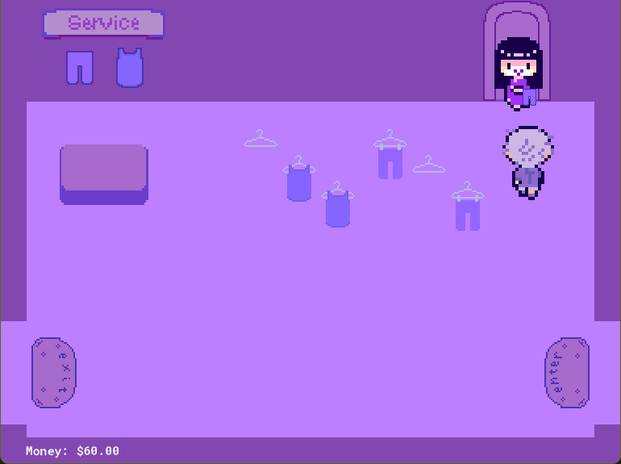

Game Development
Top Shop
A time management game inspired by Diner Dash and Fashion Fits where you manage a clothing store. Built in GameMaker Studio 2 for Game Development I (Fall 2024).
Star Strife
Isometric 3D platformer. You are an astronaut in space and must move through rings to collect stars and progress to the next level. Built in GameMaker Studio 2 for Game Development I (Fall 2024).